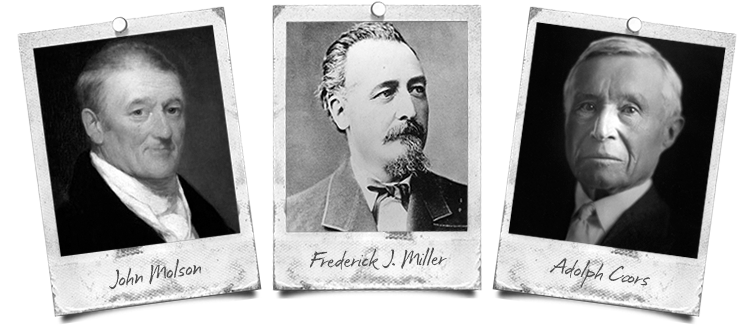
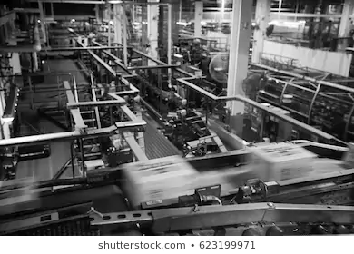
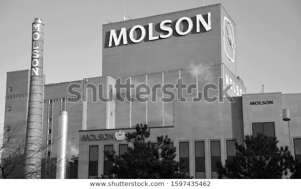

About Page
Logo

History of Coors
Founders of Coors
In 1786, English immigrant John Molson founded Canada’s oldest beer brewery on the banks of the St. Lawrence River in Montreal. He wrote, “My beer has been universally well-liked beyond my most sanguine expectations.” The legacy continues seven generations later with brands like Molson Canadian, first brewed in 1959 and still one of Canada’s most iconic and best-selling beers.
Adolph Coors, a penniless brewer’s apprentice, stowed away on a ship from Germany in 1868 and made his way west, coming upon perfect water in Clear Creek in Golden, Colorado, at the foot of the Rocky Mountains. He opened a brewery in 1873; 105 years later, Coors Light was born and is now enjoyed by beer drinkers in over 25 countries worldwide.
Frederick J. Miller began his apprenticeships in brewing in adolescence and by 1849 was brewmaster to a German prince. After immigrating to the U.S., he settled in Milwaukee, and in 1855 leased and later purchased the suburban Plank Road Brewery for $2,300. He brought a unique brewer’s yeast from Germany – its descendant yeast is still used in some of our beers.
 